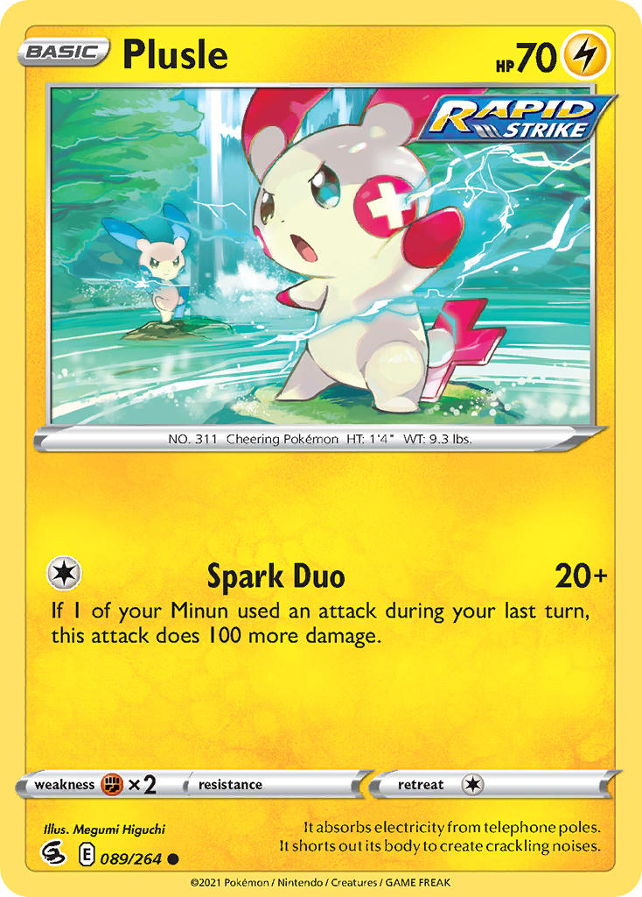
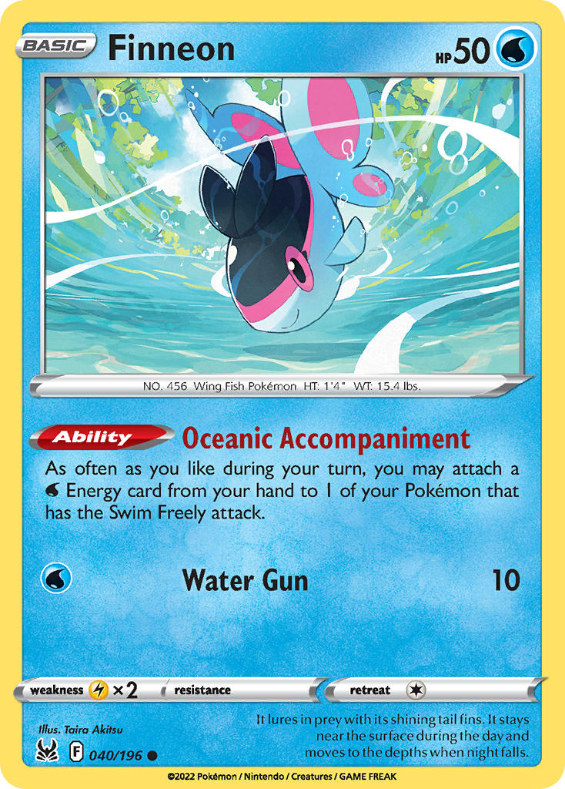
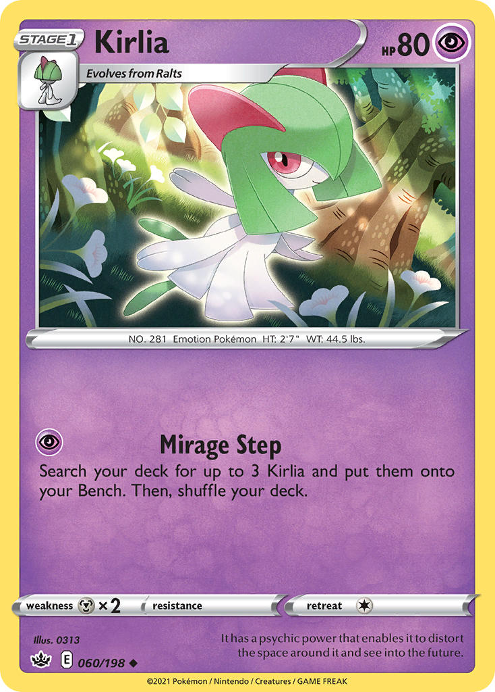

The rules are simple, but check out alternate modes below the core rules for balanced variants!
Core Rules
1. Cards must have a Regulation Mark (Sword & Shield onwards).2. All Pokémon V and Pokémon ex are banned.
3. You may only run 2 copies of each card in your deck.
4. Each evolution line in your deck must be a different type.
5. (IRL play only) At the start of the game, each player may view their prize cards and exchange a card from their hand.
(Optional) Exceptions & Exemptions
Some cards don't function unless paired with other printed cards. These exemptions can be used to increase deck diversity in the format without overpowering decks that play by the standard rules.
2.If a card references itself, you may run up to 4 copies of that card provided no other printings are used.



Example 1: Plusle (Fusion Strike) has an attack that requires Minun. You may run 1 Plusle and 1 Minun rather than 2 Plusle in your deck.
Example 2: Finneon (Lost Origin) accelerates Energy to Pokémon with the Swim Freely attack. You may run 1 "Swim Freely" Seadra and the Horsea needed to evolve into it, but may not include Kingdra. You may also include 1 "Swim Freely" Dewgong and Seaking.
Example 3: Kirlia (Chilling Reign) has Mirage Step, allowing you to Bench 3 additional Kirlia from your deck. You may run up to 4 Mirage Step Kirlia, but may not run any Refinement Kirlia if more than 1 Mirage Step Kirlia is in the deck.
Even Further Beyond: Veteran League
Want to mix up the gameplay? Impose Variant Rules to gain access to an extra ACE Spec for each. Veterans using these restrictions may also use cards from the "Sun & Moon" Block!
Each ACE Spec in a deck must be of a different type (Item, Stadium, Tool, Energy).
Regional Master
All Pokémon and Supporters must be from the same region (e.g. "Johto").